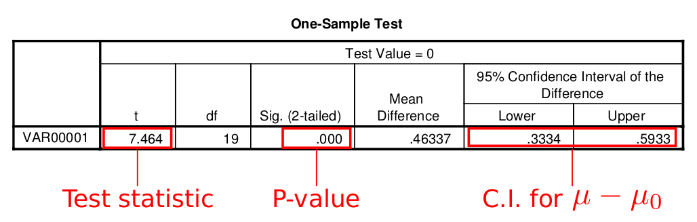

Your browser doesn't support the features required by impress.js, so you are presented with a simplified version of this presentation.
For the best experience please use the latest Chrome, Safari or Firefox browser.
STAT 301 Lab
Lab 6: Statistical Inference
T.A.: Yixuan Qiu
Confidence Interval
Example: estimate population mean $\mu$
The sample mean $\bar{X}$, a single number, is usually not enough nor reliable.
Instead, we use an interval of the form $$estimate \pm margin\ of\ error$$ to "capture" the true mean.
C.I. for $\mu$
If we know the population standard deviation $\sigma$, then the confidence interval for $\mu$ is
$$\left(\bar{X}-z^*\frac{\sigma}{\sqrt{n}}, \bar{X}+z^*\frac{\sigma}{\sqrt{n}}\right)$$
The bottom of the t-table gives the value of $z^*$ corresponding to different confidence level $C$
$C=90\%\Rightarrow z^*=1.645$
$C=95\%\Rightarrow z^*=1.960$
$C=99\%\Rightarrow z^*=2.576$
Hypothesis Testing
Draw conclusion on a statement about the population
Steps
State null hypothesis and alternative hypothesis
Calculate test statistic
Find P-value
Make conclusion
State Hypotheses
Want to test whether the populatoin mean $\mu$ is greater than $\mu_0$ or not
$$H_0:\mu=\mu_0\quad H_a:\mu>\mu_0$$
Want to test whether the populatoin mean $\mu$ is less than $\mu_0$ or not
$$H_0:\mu=\mu_0\quad H_a:\mu<\mu_0$$
Want to test whether the populatoin mean $\mu$ is equal to $\mu_0$ or not
$$H_0:\mu=\mu_0\quad H_a:\mu\neq\mu_0$$
Test Statistic
If population standard deviation $\sigma$ is given, we calculate the z-score for $\bar{X}$
$$z=\frac{\bar{X}-\mu}{\sigma/\sqrt{n}}$$
P-value
$H_a:\mu>\mu_0$
$$P-value = P(Z>z)$$
$H_a:\mu<\mu_0$
$$P-value = P(Z<z)$$
$H_a:\mu\neq\mu_0$
$$P-value = 2[1-P(Z<|z|)]$$
Conclusion
If P-value < $\alpha$, we reject the null hypothesis
If P-value > $\alpha$, we do not reject the null hypothesis
We NEVER say "accept"
Moving to t Test
When $\sigma$ is UNKNOWN, we use t test instead
Use SPSS to do this
SPSS will give you P-value for two-sided test
P-value for one-sided test = 0.5 * P-value for two-sided test
The confidence interval that SPSS gives you is about $\mu-\mu_0$, not $\mu$, so you should add $\mu_0$ to both limits of the interval
Moving to t Test

Robustness Guidelines
When is t test appropriate?
If $n<15$, data should be Normally distributed with no outliers or skewness
If $15\le n < 40$, data should be fairly symmetric, Normally distributed with no outliers or heavy skewness